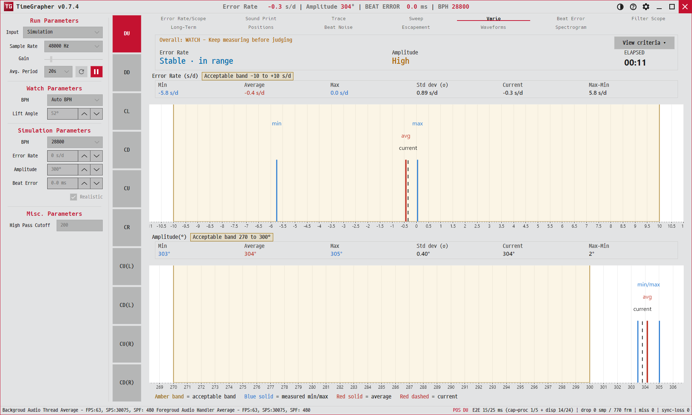

5. Vario
레이트와 진폭의 안정도를 게이지와 통계로 보여 주고, "기록해도 될 만큼 안정적인지"를 색으로 판정합니다.
Shows rate and amplitude stability as gauges + stats, and gives a colour verdict on whether the watch is "stable enough to record".

용도 · Purpose
측정값이 얼마나 퍼져 있는지(표준편차)를 보고, 지금이 신뢰할 만한 측정 시점인지 즉시 판단합니다.
Reads how spread out the readings are (standard deviation) so you can tell at a glance whether the watch is settled enough to trust.
무엇이 보이나 · What's shown
- Error Rate 게이지 — 가로축 Error Rate(s/d) −10~+10. 음영 띠 = 허용 범위, 파란 선 = 최소·최대, 빨간 선 = 평균, 점선 = 현재값. 곁에
min / max / avg / current라벨.Error Rate gauge — axis = Error Rate (s/d) −10…+10. Shaded band = acceptable range; blue lines = min/max; red line = mean; dashed = current. Labelsmin / max / avg / current. - 진폭 게이지 — 같은 구성, 건강범위 270–300°.Amplitude gauge — same layout, healthy band 270–300°.
- 상단 요약 — 상태 칩(녹/황/적) + 경과시간 + 종합 판정 텍스트(예: "Overall: OK - Stable enough to record").Top summary — status chips (green/yellow/red) + elapsed time + overall verdict (e.g. "Overall: OK - Stable enough to record").
- 통계표 — 각 게이지 아래
Min · Max · Spread · Average · Sigma · Current.Stats grid — under each gauge:Min · Max · Spread · Average · Sigma · Current.
읽는 법 · How to read (판정)
| 판정 · Verdict | 의미 · Meaning |
|---|---|
| Measuring… | 아직 비트가 부족(약 30비트 전). 기다리세요.Not enough beats yet (~<30). Wait. |
| Stable · in range | 허용 범위 안 + 변동 작음 = 최상.In band + low variation = best. |
| In range · unstable | 범위 안이지만 sigma > 3.0 s/d로 출렁임.In band but jittery (sigma > 3.0 s/d). |
| Fast / Slow · out of range | ±10 s/d를 벗어남.Outside ±10 s/d. |
진폭: Healthy 270–300°, Slightly low 270° 미만, Low · service 220° 미만.
Amplitude: Healthy 270–300°, Slightly low below 270°, Low · service below 220°.
Spread(최대−최소)와 Sigma(표준편차)가 작을수록 좋습니다. 일시정지 후 리뷰 커서를 옮기면 그 시점의 현재값 선이 따라 움직입니다.
Smaller Spread (max−min) and Sigma (std dev) are better. While paused, moving the review cursor moves the "current" line to that moment.